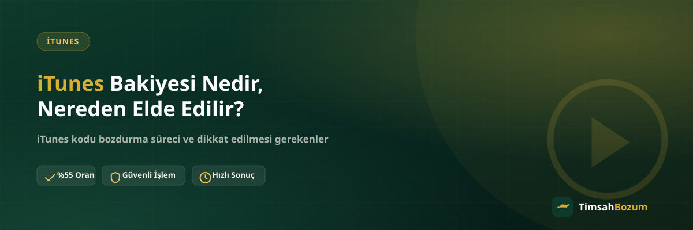

iTunes bakiyesi, Apple kullanıcılarının App Store, iTunes Store ve Apple Music gibi platformlarda harcama yapması için tasarlanmış bir ön ödeme sistemi. Ama bu bakiye çoğu zaman hesap üzerinde kendiliğinden biriken bir tutar değil, tek seferlik bir koddan ibaret. Bu kodun ne olduğunu, nereden geldiğini ve neden bozdurulduğunu bilmek, elinde kullanılmayan bir iTunes kodu olan herkes için faydalı.
iTunes bakiyesi nedir
iTunes bakiyesi, Apple'ın dijital mağazalarında geçerli bir bakiye kod sistemi. Bir kod satın alındığında veya hediye olarak alındığında, bu kod bir Apple ID hesabına girilerek bakiyeye dönüştürülür. Kodun kendisi rastgele karakterlerden oluşan bir dizi, genelde kazıma bir kart üzerinde veya dijital olarak e-posta yoluyla teslim ediliyor.
iTunes kodu nereden elde edilir
iTunes kodları birkaç farklı yoldan elde edilebiliyor. En yaygın yol market veya elektronik mağazalarından fiziksel kart satın almak. Bunun dışında Apple'ın kendi App Store uygulaması veya web sitesi üzerinden dijital kod satın almak da mümkün. Üçüncü bir yol ise hediye olarak alınması: doğum günü, bayram veya farklı bir vesileyle biri sana bir iTunes kodu hediye edebilir. Kampanya ve promosyon dönemlerinde de bazen kod dağıtımı yapılıyor.
Fiziksel kod ile dijital kod arasındaki fark
Fiziksel iTunes kartı, market rafında satılan ve arkasındaki kazıma bölümde kod bulunan bir kart. Dijital kod ise Apple'ın kendisinden veya yetkili bir satıcıdan e-posta yoluyla teslim edilir, elle tutulan bir kartı yoktur. Her iki tür de aynı şekilde çalışıyor, kod bir Apple ID'ye tanımlandığında bakiyeye dönüşüyor. Bozum açısından ikisi arasında fark yok, hangi yoldan geldiğine bakılmaksızın kodun kendisi bozduruluyor.
Kod ile bakiye arasındaki ilişki
Burada sık karışan bir nokta var: iTunes kodu ile iTunes bakiyesi aynı şey değil, ama birbirine dönüşüyor. Kod, henüz kullanılmamış haldeyken bir dizi karakterden ibaret. Bu kod bir Apple ID hesabına girildiğinde hesabın bakiyesine eklenir ve o andan itibaren hesap bakiyesi olarak harcanabilir hale gelir. TimsahBozum üzerinden bozdurma işlemi, hesaba yüklenmemiş, henüz kullanılmamış kod üzerinden yapılıyor. Kod bir kez hesaba yüklendikten sonra bozdurmak mümkün olmuyor, çünkü artık kişisel bir Apple hesabına bağlı bir bakiyeye dönüşmüş oluyor.
iTunes bakiyesi nerelerde kullanılır
iTunes bakiyesi veya kod aktifleştirildikten sonra App Store'dan uygulama ve oyun satın almada, iTunes Store'dan film ve dizi kiralamada, Apple Music aboneliğinde ve iCloud depolama gibi Apple hizmetlerinde harcanabiliyor. Yalnızca Apple ekosistemi içinde geçerli, başka bir markette veya platformda kullanılamıyor.
Kullanılmayan iTunes kodu neden bozdurulur
Android kullanan biri hediye olarak bir iTunes kodu aldığında bu kodu değerlendirebileceği bir yer bulamayabilir. Aynı şekilde Apple cihazı olup da Apple hizmetlerini aktif kullanmayan biri de elinde kalan kodu genelde uzun süre bekletiyor. Böyle durumlarda kodu nakde çevirmek, elde kullanılmadan bekleyen bir değeri değerlendirmenin bir yolu.
iTunes kodu bozdururken nelere dikkat edilmeli
Kodu paylaşmadan önce daha önce kullanılmadığından emin olmak gerekiyor, kullanılmış bir kod için ödeme yapılamıyor. Kod karakterlerinin eksiksiz ve doğru paylaşılması da önemli, tek bir karakter hatası kodu geçersiz kılabiliyor. iTunes'ta hesap bakiyesi değil kod bozduruluyor, bu yüzden kodun tamamı tek seferde bozduruluyor; bir kısmını ayırıp kalanını başka bir zaman göndermek mümkün olmuyor.
iTunes bozdurma güvenliği
Bozum işlemi yaparken dikkat edilmesi gereken en temel kural, kod bilgisini yalnızca resmi WhatsApp hattına (+90 543 887 21 71) paylaşmak. Numaranın resmi sitede yayınlanan numarayla ve +90 ile başladığından emin olmak, farklı bir hesaptan gelen taleplere karşı temkinli olmak gerekiyor. Güvenilir bir bozum hizmeti oranını açıkça paylaşır ve süreci kod bilgisi istemeden önce anlatır. Piyasa ortalamasının belirgin şekilde üzerinde bir oran teklif eden hesaplara karşı dikkatli olmakta fayda var. Ayrıca hiçbir bozum işlemi, hesabına gelen bir SMS doğrulama kodunu senden istemez; böyle bir talep gelirse işlemi durdurup iletişime geçmek en doğrusu.
TimsahBozum üzerinden iTunes bozdurma
TimsahBozum üzerinden iTunes kodunu bozdurmak için WhatsApp hattına yazman yeterli. Kod bilgini paylaşmadan önce güncel oranı teyit edebilir, ardından kodunu göndererek işlemi başlatabilirsin. Güncel oran %55, oranlar piyasa koşullarına göre değişebileceği için işlem öncesi teyit etmek en doğru yöntem. Süreç boyunca hesabına giriş yapılmıyor, yalnızca paylaştığın kod bilgisi üzerinden işlem ilerliyor.
Elinde değerlendirilmeyi bekleyen bir iTunes kodu varsa WhatsApp hattımıza yazarak süreci başlatabilirsin.
iTunes bakiyesi ile App Store bakiyesi aynı mı
Apple, bir süredir iTunes ve App Store bakiyesini tek bir "Apple Hesap Bakiyesi" altında birleştirdi. Eskiden ayrı görünen iTunes kredisi ile App Store kredisi bugün aynı bakiye havuzunda toplanıyor ve uygulama, oyun, müzik, film veya abonelik gibi farklı harcamalarda ortak kullanılıyor. Bu yüzden elindeki koda "iTunes kodu" veya "App Store kodu" denmesi sonucu değiştirmez, ikisi de aynı bakiyeye dönüşür. Bozum açısından önemli olan nokta ise bu değerin henüz bir hesaba yüklenmemiş, kullanılmamış kod halinde olmasıdır; kod bir kez hesaba tanımlandığında kişisel bakiyeye dönüşür ve artık bozdurulamaz.
İlgili Yazılar
- iTunes Bakiye Bozdurma (hizmet sayfası)
- Razer Gold Kodu Kullanılmışsa Ne Olur?
- Mobil Ödeme Bozdurma mı, Kod Satışı mı? Aradaki Fark